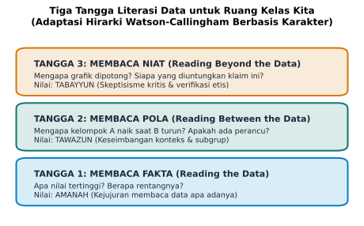

7 Membimbing Nalar Kritis di Sekolah dan Rumah
“Pendidikan terbaik bukanlah yang menjejalkan jawaban-jawaban siap saji ke kepala anak, melainkan yang dengan sabar membimbing mereka menyalakan lentera nalar dan mengajukan pertanyaan-pertanyaan yang tepat saat berhadapan dengan dunia nyata.”
7.1 Percakapan di Meja Makan
Malam itu, di ruang tengah sebuah rumah keluarga sederhana, seorang anak perempuan kelas satu sekolah menengah pertama bernama Aisyah duduk termenung menatap buku pekerjaan rumah matematikanya. Di sampingnya, beberapa lembar kertas coretan berserakan dengan barisan angka yang telah dihapus berulang kali hingga kertasnya nyaris robek.
Sang ayah yang baru selesai melipat sajadah selepas salat isya menghampiri meja belajar, menarik kursi kayu kecil, lalu duduk di samping putrinya.
“Ada soal yang membuatmu bingung, Nak?” tanya sang ayah dengan nada suara yang hangat.
Aisyah menghela napas panjang, menunjuk sebuah soal di buku cetaknya. “Iya, Ayah. Di sini ada data hasil ujian matematika dari dua kelas yang berbeda, masing-masing ada tiga puluh siswa. Guru di sekolah menyuruh kami menghitung nilai rata-rata dari kedua kelas itu. Waktu aku hitung pakai rumus, hasilnya persis sama: nilai rata-rata Kelas A adalah 75, dan nilai rata-rata Kelas B juga 75.”
“Bagus sekali, berarti hitunganmu sudah benar,” puji sang ayah.
“Tapi ada yang aneh, Ayah,” potong Aisyah seraya memperlihatkan dua buah diagram titik di bawah soal tersebut. “Lihat gambarnya. Di Kelas A, nilainya terbelah dua: separuh murid nilainya mendekati seratus, dan separuh murid lagi nilainya merah di bawah lima puluh, tidak ada satu pun murid yang dapat nilai tujuh puluh lima. Tapi di Kelas B, hampir semua murid nilainya kumpul di angka tujuh puluh empat, tujuh puluh lima, dan tujuh puluh enam. Dua kelas ini rasanya sangat berbeda jauh keadaannya, tapi buku ini bilang kesimpulannya cuma satu kalimat: ‘performa kedua kelas adalah sama’. Rasanya ada yang tidak adil dengan jawaban itu, Ayah.”
Mendengar penuturan putrinya, sang ayah tersenyum bangga. Tanpa disadari oleh guru di sekolahnya, Aisyah baru saja melakukan sebuah lompatan intelektual yang luar biasa: ia secara intuitif menangkap keterbatasan nilai rata-rata dan merasakan pentingnya konsep variabilitas serta sebaran data (dispersion). Nalar alaminya memberontak ketika sebuah formula tunggal mencoba memaksakan kesimpulan seragam atas dua realitas manusiawi yang sangat bertolak belakang.
Tragedi pendidikan kita sering kali bermula ketika seorang anak yang memiliki rasa ingin tahu cemerlang seperti Aisyah dipaksa membungkam nalarnya demi mematuhi kunci jawaban lembar kerja siswa. Sistem pengajaran konvensional kerap mereduksi statistika menjadi satu pertanyaan dangkal: “Berapa rata-ratanya?”.
Tugas kita sebagai orang tua di rumah dan pendidik di sekolah adalah mengubah arah haluan pertanyaan tersebut. Kita harus membimbing anak-anak kita melangkah dari pertanyaan hitungan mekanis menuju penyelidikan makna: “Apa cerita sesungguhnya yang sedang disampaikan oleh angka-angka ini? Dan apa bagian cerita yang sengaja disembunyikan?”.
7.2 Lima Miskonsepsi Data yang Kerap Mengecoh Pelajar
Ketika mendampingi anak atau siswa belajar membaca grafik dan data kuantitatif, para pendidik dan orang tua kerap mendapati bahwa kekeliruan bernalar anak bukanlah disebabkan oleh ketidakmampuan berhitung aljabar, melainkan oleh bias kognitif alami. Ada lima miskonsepsi data yang paling sering mengecoh pikiran generasi muda:
7.2.1 Mencampuradukkan Korelasi dengan Hubungan Sebab-Akibat
Ini adalah jebakan berpikir paling jamak di seluruh dunia. Ketika anak melihat dua garis grafik yang sama-sama menanjak naik, otak mereka secara otomatis menyimpulkan bahwa peristiwa pertama menyebabkan peristiwa kedua.
Sebagai contoh, jika sebuah grafik memperlihatkan bahwa anak-anak yang memiliki sepatu olahraga mahal memiliki nilai matematika lebih tinggi, seorang siswa akan mudah menyimpulkan bahwa membeli sepatu baru akan mendongkrak nilai ujiannya.
Melalui dialog sokratik, pendidik dapat membimbing anak mengajukan pertanyaan penuntun: “Apakah sepatunya yang membuat anak pintar berhitung, ataukah ada faktor orang tua yang mampu membelikan sepatu mahal sekaligus mampu membiayai les belajar tambahan?”. Pertanyaan ini melatih anak mencari variabel ketiga (confounding factor) yang menjadi akar penyebab sesungguhnya.
7.2.2 Mengabaikan Ukuran Sampel (Sample Size Neglect)
Siswa kerap menarik generalisasi semesta yang tergesa-gesa hanya berdasarkan segelintir pengamatan di lingkungan terdekatnya. Seorang murid dapat dengan percaya diri berkata: “Semua anak di kota kita pasti tidak suka makan sayur bayam, karena tiga orang teman sebangku saya semuanya menolak makan sayur siang ini”.
Pendidik dapat memfasilitasi anak memahami kelemahan kesimpulan ini dengan analogi sederhana: “Jika kamu mengambil tiga tetes air dari pinggir pantai dan tidak menemukan ikan di dalam sendokmu, apakah itu membuktikan bahwa lautan luas tidak memiliki ikan?”. Analogi ini menanamkan kesadaran intuitif mengenai kerapuhan sampel kecil.
7.2.3 Terpaku pada Angka Absolut (Anchoring on Absolute Numbers)
Ketika membaca berita utama di media massa yang memberitakan: “Tahun Ini Jumlah Pelanggaran Lalu Lintas di Kota A Naik Sebanyak Seribu Kasus, Sementara di Kota B Hanya Naik Seratus Kasus”, siswa cenderung langsung menyimpulkan bahwa pengemudi di Kota A jauh lebih buruk moralnya dibandingkan Kota B.
Siswa lupa menanyakan proporsi: bagaimana jika Kota A memiliki penduduk sepuluh juta jiwa (kenaikan 0,01%), sementara Kota B hanya berpenduduk lima puluh ribu jiwa (kenaikan 0,2%)? Membimbing anak untuk selalu membagi angka absolut dengan total populasi adalah keterampilan dasar untuk menumbuhkan cara pandang yang adil dan proporsional.
7.2.4 Mengabaikan Laju Dasar (Base Rate Neglect)
Bayangkan sebuah tes kesehatan digital baru yang diklaim memiliki tingkat akurasi 99% dalam mendeteksi sebuah virus langka yang hanya menjangkiti 1 dari 10.000 orang di sebuah wilayah. Jika seorang siswa atau karyawan kantor dinyatakan positif oleh alat tes tersebut, berapa peluang sesungguhnya bahwa orang tersebut benar-benar tertular virus?
Hampir seluruh siswa dan bahkan orang dewasa profesional di dunia kerja akan menjawab spontan: “Sembilan puluh sembilan persen pasti tertular!”.
Kekeliruan dramatis ini terjadi karena pikiran manusia secara intuitif mengabaikan frekuensi alami populasi dasar (base rate). Secara matematis, probabilitas bersyarat ini dihitung melalui Teorema Bayes:
\[P(\text{Sakit} \mid \text{Positif}) = \frac{P(\text{Positif} \mid \text{Sakit}) \cdot P(\text{Sakit})}{P(\text{Positif})}\]
Mari kita bedah angka-angka ini ke dalam tabel kontingensi nyata pada populasi sepuluh ribu orang (\(10.000\) orang): - Dari \(10.000\) orang tersebut, karena penyakit ini sangat langka (prevalensi \(0{,}01\%\)), sesungguhnya hanya ada \(1\) orang yang benar-benar sakit, sementara \(9.999\) orang lainnya dalam kondisi sehat bugar. - Ketika seluruh populasi diuji, alat tes yang memiliki sensitivitas \(99\%\) akan mendeteksi \(1\) orang yang sakit tersebut dengan hasil positif (positif sejati). - Namun, alat tes yang memiliki spesifisitas \(99\%\) juga memiliki tingkat kesalahan positif palsu (false positive rate) sebesar \(1\%\). Ketika alat ini menguji \(9.999\) orang yang sehat, sebanyak \(1\%\) dari mereka, yaitu sekitar \(100\) orang sehat, akan secara keliru dinyatakan positif!
Sekarang, hitunglah kenyataan di lapangan: total orang yang memegang hasil tes bertuliskan “positif” adalah \(1 + 100 = 101\) orang. Dari seratus satu orang yang dinyatakan positif tersebut, berapa orang yang benar-benar sakit? Hanya \(1\) orang!
Peluang seseorang benar-benar terinfeksi virus setelah menerima hasil tes positif hanyalah:
\[P(\text{Sakit} \mid \text{Positif}) = \frac{1}{101} \approx 0{,}99\%\]
Peluangnya kurang dari satu persen! Ketidakmampuan memperhitungkan kelangkaan laju dasar di populasi sering kali memicu kepanikan massal, diagnosis keliru, dan pemborosan anggaran yang luar biasa, baik di bidang medis, pengambilan keputusan korporat, maupun evaluasi program publik.
7.2.5 Salah Membaca Arah Tren Akibat Sumbu yang Dipotong
Ketika melihat grafik diagram batang yang sumbu vertikalnya dipotong di angka 95%, anak-anak dan bahkan para manajer di ruang rapat kantor sering kali berteriak cemas: “Grafiknya anjlok ke jurang kehancuran!”. Melatih anak untuk selalu memeriksa angka nol di sudut kiri bawah grafik adalah langkah pertama dalam membentuk imunitas visual terhadap manipulasi media dan kepanikan data di dunia kerja.
7.3 Tiga Tangga Literasi Data untuk Ruang Kelas Kita
Bagaimana kita dapat menyusun sebuah panduan praktis yang mudah diterapkan oleh guru di sekolah dan orang tua di rumah untuk membimbing nalar kritis anak secara bertahap?
Kita dapat mengadaptasi kerangka hierarki literasi data klasik yang dirumuskan oleh Jane Watson dan Rosemary Callingham (Watson and Callingham 2003), lalu memadukannya dengan tiga nilai karakter fundamental: Amanah, Tawazun, dan Tabayyun. Model ini kita sebut sebagai Tiga Tangga Literasi Data untuk Ruang Kelas Kita, sebagaimana dipetakan dalam Figure 7.1.

Tiga tangga ini dirancang laksana anak tangga yang harus dinaiki secara berurutan:
7.3.1 Tangga 1: Membaca Fakta (Reading the Data)
Ini adalah anak tangga pertama yang berfokus pada ketepatan membaca informasi literal yang tertulis eksplisit di atas kanvas data. - Fokus Pertanyaan Guru dan Orang Tua: - “Apa nilai tertinggi pada grafik batang ini?” - “Pada bulan apa penjualan buku mencapai titik paling rendah?” - “Berapa selisih angka antara kategori A dan kategori B?” - Pilar Nilai Karakter: Amanah
Anak dilatih untuk menjunjung tinggi kejujuran dan ketelitian dalam membaca fakta apa adanya. Mereka dibiasakan untuk tidak mengarang angka, tidak melebih-lebihkan capaian, dan tidak mengurangi fakta kuantitatif yang tertera di hadapan mereka.
7.3.2 Tangga 2: Membaca Pola (Reading Between the Data)
Anak tangga kedua melangkah lebih jauh dengan menghubungkan titik-titik data, mengenali relasi antarvariabel, dan mengidentifikasi tren perubahan. - Fokus Pertanyaan Guru dan Orang Tua: - “Mengapa garis grafik ini mendadak melonjak tajam pada bulan Juni dan kembali turun di bulan Agustus?” - “Apakah ada pola musiman yang berulang setiap akhir pekan?” - “Mengapa kelompok murid A nilainya naik saat waktu belajarnya ditambah, tetapi kelompok murid B justru nilainya menurun? Apakah ada faktor kelelahan?” - Pilar Nilai Karakter: Tawazun
Anak dilatih untuk berpikir seimbang, proporsional, dan kontekstual. Mereka belajar membandingkan dua fenomena secara adil, mendeteksi variabel perancu, serta menolak kesimpulan sepihak yang mengabaikan dinamika hubungan antarbagian.
7.3.3 Tangga 3: Membaca Niat (Reading Beyond the Data)
Anak tangga tertinggi menuntut kemampuan evaluasi kritis tingkat tinggi terhadap intensi pembuat data, metodologi penarikan sampel, dan implikasi etis dari sebuah klaim. - Fokus Pertanyaan Guru dan Orang Tua: - “Mengapa pembuat infografis ini memilih warna merah menyala untuk kelompok tertentu dan warna abu-abu pudar untuk kelompok lainnya?” - “Mengapa sumbu vertikalnya sengaja dipotong di angka delapan puluh? Apa kesan emosional yang ingin mereka tanamkan ke benak pembaca?” - “Siapa yang paling diuntungkan secara finansial atau politik jika masyarakat mempercayai grafik ini begitu saja?” - “Jika grafik ini dibuat oleh sistem kecerdasan buatan, apakah mesin ini mengutip sumber data resmi ataukah sekadar mengarang angka halusinasi?” - Pilar Nilai Karakter: Tabayyun
Anak dibekali dengan perisai skeptisisme ilmiah yang sehat dan keberanian moral untuk menginterogasi sebuah klaim. Mereka belajar untuk tidak menjadi korban propaganda digital, berani menuntut bukti metodologi yang sahih, dan senantiasa memverifikasi kebenaran sebelum menyebarkan sebuah informasi kepada khalayak ramai.
7.4 Seni Memfasilitasi Dialog Sokratik
Kunci keberhasilan membumikan Tiga Tangga Literasi Data ini tidak terletak pada penguasaan buku teks tebal, melainkan pada kemampuan pendidik dan orang tua dalam mempraktikkan dialog sokratik (Socratic dialogue).
Dalam metode sokratik, orang dewasa tidak bertindak sebagai penceramah serbatahu yang mendiktekan benar dan salah. Sebaliknya, orang dewasa berperan sebagai fasilitator yang mengajukan pertanyaan-pertanyaan pemantik nalar, membiarkan anak menelusuri alur logikanya sendiri, hingga anak secara mandiri menemukan kontradiksi dalam pemikiran awalnya.
Mari kita perhatikan contoh cuplikan dialog sokratik antara seorang guru dan muridnya di ruang kelas sekolah menengah:
Guru: “Budi, coba perhatikan grafik di layar proyektor ini. Grafik ini memperlihatkan bahwa negara-negara dengan konsumsi cokelat per kapita paling tinggi ternyata memiliki jumlah pemenang Hadiah Nobel terbanyak di dunia. Menurutmu, apa artinya ini?”
Murid: “Wah, berarti kalau kita rajin makan cokelat setiap hari, otak kita akan jadi pintar dan bisa memenangkan Hadiah Nobel, Bu!”
Guru: (Tersenyum ramah) “Sebuah hipotesis yang menarik, Budi. Sekarang Ibu ingin bertanya: apakah cokelat itu murah atau mahal?”
Murid: “Cokelat yang enak biasanya cukup mahal, Bu.”
Guru: “Nah, jika sebuah negara memiliki konsumsi cokelat yang sangat tinggi di kalangan rakyatnya, kira-kira negara itu tergolong negara kaya atau negara miskin?”
Murid: “Pasti negara yang makmur dan sejahtera, Bu.”
Guru: “Bagus. Dan di negara yang makmur dan sejahtera, menurutmu bagaimana fasilitas laboratorium riset, dana penelitian universitas, dan gaji para ilmuwan di sana?”
Murid: (Mata berbinar, mulai menyadari) “Pasti sangat lengkap dan dananya melimpah, Bu!”
Guru: “Jadi, menurutmu apa yang sebenarnya menyebabkan sebuah negara melahirkan banyak pemenang Hadiah Nobel: permen cokelatnya, ataukah investasi besar pada pendidikan dan riset ilmiah?”
Murid: (Tertawa) “Investasi pendidikannya, Bu! Cokelatnya cuma kebetulan ikut terbeli karena masyarakatnya makmur.”
Guru: “Tepat sekali, Budi. Kamu baru saja membedakan korelasi dari kausalitas.”
Dialog singkat di atas yang mengadaptasi studi korelasi cokelat-Nobel (Messerli 2012) hanya membutuhkan waktu kurang dari tiga menit, namun dampak pembentukan nalar kritis yang tertanam di benak siswa jauh lebih abadi dibandingkan menghafalkan sepuluh definisi statistik di lembar ujian. Ketika anak dilatih untuk berpikir mandiri melalui pertanyaan penuntun, mereka sedang membangun imunitas kognitif yang akan melindungi masa depan mereka dari berbagai tipu daya informasi di era digital.
7.5 Rumah dan Sekolah sebagai Ekosistem Integritas
Membina nalar kritis anak pada hakikatnya adalah ikhtiar merawat masa depan peradaban. Di era ketika kecerdasan buatan dapat memproduksi ribuan grafik dan artikel meyakinkan dalam hitungan detik, anak-anak kita tidak lagi membutuhkan sekolah yang sekadar melatih kecepatan berhitung mekanis. Mereka membutuhkan ekosistem belajar yang menumbuhkan kejernihan nurani dan ketajaman akal sehat.
Ketika orang tua di meja makan rumah terbiasa mengajak anak berdiskusi mengenai infografis di koran harian, ketika guru di madrasah dan sekolah umum membimbing siswa menaiki Tiga Tangga Literasi Data dengan sabar, kita sedang menanam benih-benih integritas publik.
Kita sedang mempersiapkan generasi baru pemimpin bangsa yang tidak silau oleh retorika angka, tidak gentar menghadapi klaim data yang manipulatif, dan selalu memegang teguh prinsip bahwa setiap data kuantitatif harus dipertanggungjawabkan di hadapan kebenaran, keadilan, dan kemanusiaan.